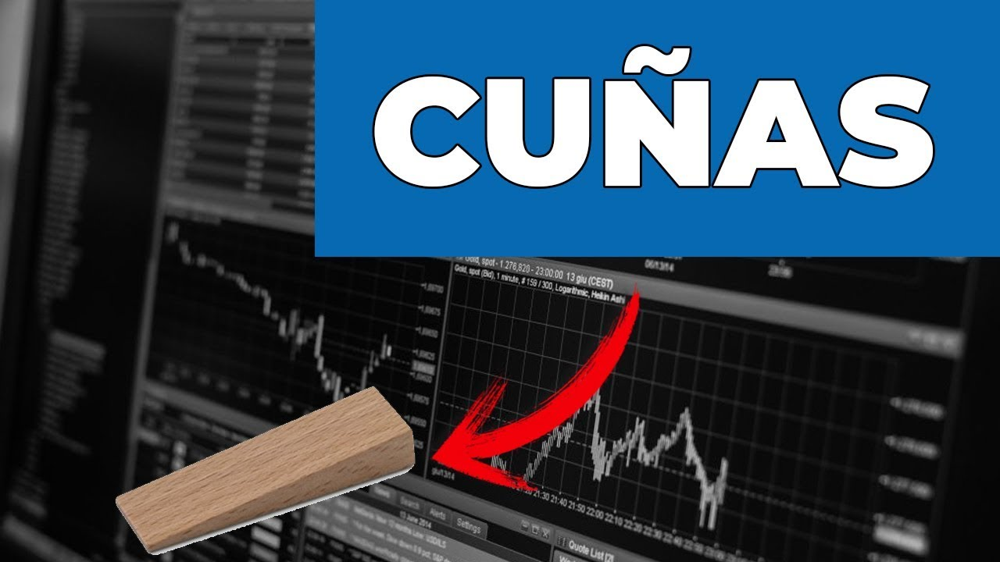

Cuñas Alcistas y Bajistas
Las cuñas son figuras chartistas que cumplen con funciones similares a las de el banderín.
Es un patrón que nos indica un ligero descanso del precio, antes de continuar con la tendencia. Hay que tener espacial atención a la cuña, pues apunta en dirección contraría al movimiento tras la ruptura.
Este patrón forma una figura que se asemeja a una cuña (cómo su nombre lo indica), y para ello debe cumplir con ciertas caracteristicas:
- Encontrarse en una tendencia definida.
- Formación de una pequeña consolidación en forma de cuña.
- Al menos dos testeos en los soportes y dos testeos en las resistencias.
- La distancia en la tendencia previa nos indica la altura del nivel objetivo tras la ruptura.
Antes de que surja el patrón es necesario identificar una tendencia previa. Es importante que sepas que estos patrones que estamos mencionando en las ultimas clases, reducen su efectividad si el mercado esta plano o sin tendencia.
Las cuñas suelen ser de un tamaño bastante reducido, y se forman cuando el precio consolida. Si la consolidación es muy pequeña puede ser difícil llegar a detectar esta figura.
En el siguiente vídeo explico cómo identificar y cómo operar una cuña. Así como algunos ejemplos.
